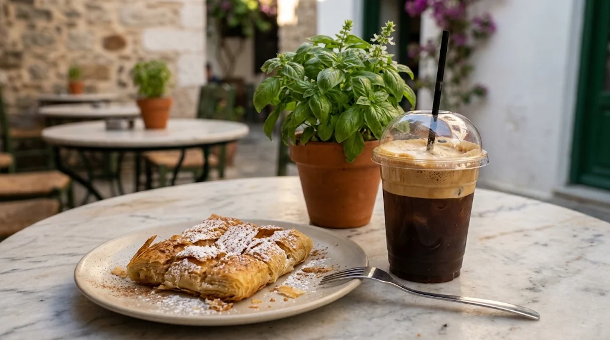

From the lanes of Ano Poli to the seafront and Ladadika, with a stop for bougatsa.
Explore the sightsThree stops for a walk through Thessaloniki.
Walk up to the old city walls for a view of Thessaloniki and the Thermaic Gulf.
Follow the promenade along the sea to the Umbrellas sculpture.
Explore cobbled lanes and stop for a bite at a local taverna.
